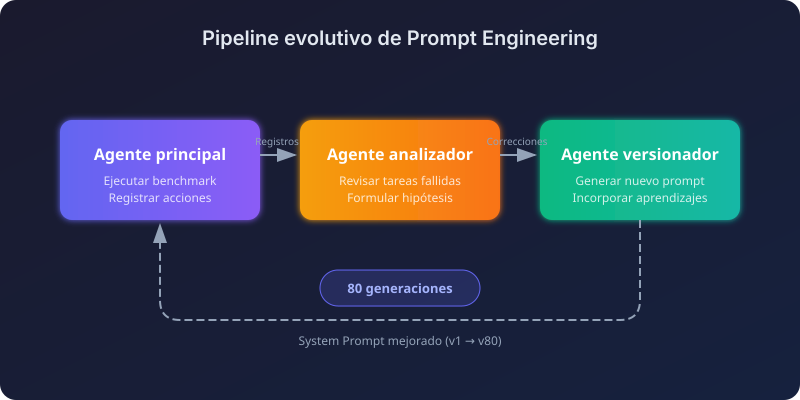
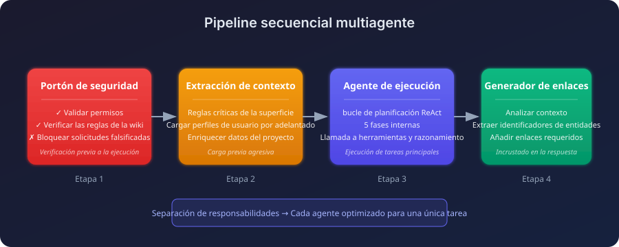
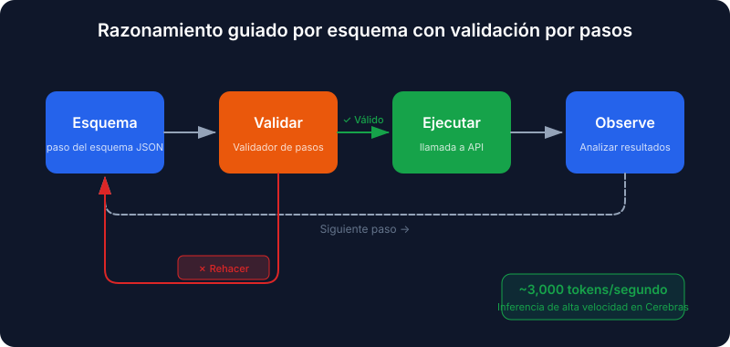
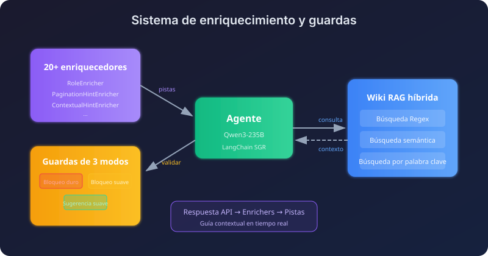
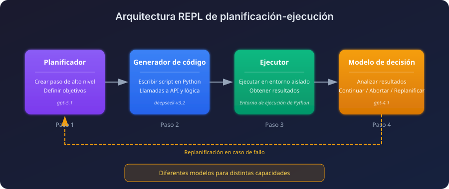
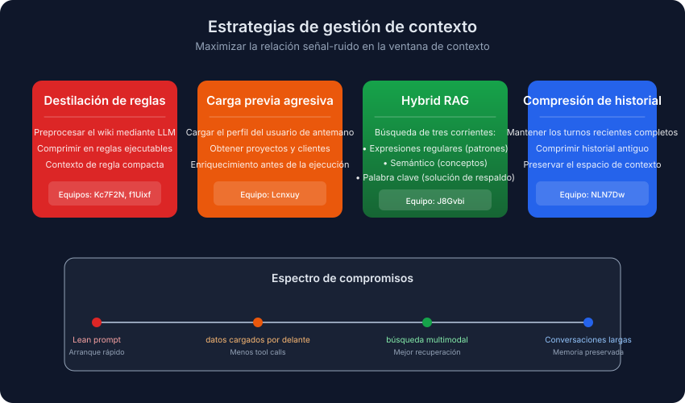
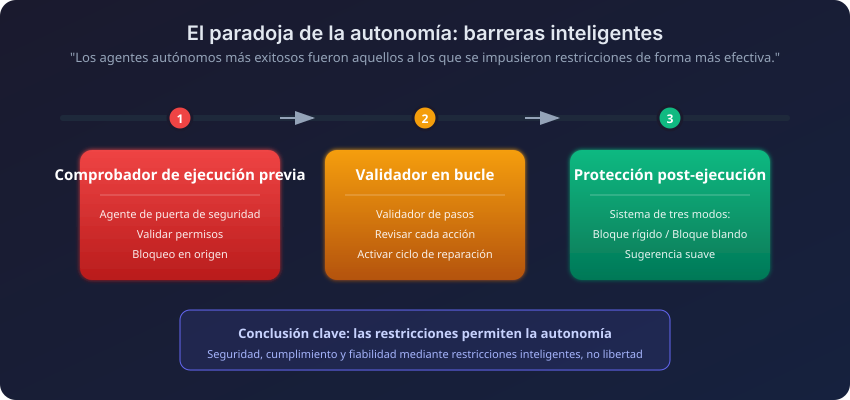

Traducción automática
Este artículo se tradujo automáticamente a partir de la versión original en inglés.
Desafío Enterprise RAG 3 (ECR3): Arquitecturas de agentes de IA ganadoras
El Desafío Enterprise RAG 3 (ECR3) acaba de concluir. Participaron 524 equipos, se ejecutaron más de 341,000 instancias de agentes, y solo el 0.4% de ellos logró una puntuación perfecta. Ahora que la tabla de clasificación y los resúmenes están disponibles públicamente, analicé las soluciones ganadoras para identificar en qué se diferenciaron los equipos de élite.
En esta publicación se explica qué es el ECR3, cómo eran las tareas y los patrones que repetidamente observé en las arquitecturas que tuvieron éxito.
Resumen: Los pipelines multiagente superan a los monolíticos. El equipo ganador aplicó ingeniería evolutiva de prompts a través de más de 80 iteraciones automatizadas. Los competidores invirtieron esfuerzos considerables en mecanismos de control (verificaciones de seguridad previas al ejecución, validadores durante el proceso y protecciones posteriores) así como en estrategias de contexto. Lo que se incluía en el contexto era más importante que su cantidad.
¿Qué es el Enterprise RAG Challenge?
El Enterprise RAG Challenge 3 es un proyecto de investigación a gran escala basado en colaboración comunitaria que evalúa cómo los agentes de IA autónomos gestionan tareas empresariales complejas. A diferencia de los benchmarks estáticos, ECR3 se ejecuta en la Simulación Empresarial Agente-Based (AGES), una simulación de eventos discretos que expone un API empresarial realista### Por qué es importante ECR3
Gracias a AGES, los agentes operan dentro de una empresa ficticia que cuenta con:
- Perfiles de empleados con habilidades y departamentos específicos
- Proyectos con asignaciones de equipo y relaciones con clientes
- Wiki corporativo que incluye reglas de negocio y jerarquías de permisos
- Seguimiento de tiempo y operaciones financieras
Cada tarea inicia su propia simulación con datos nuevos, por lo que los agentes no pueden memorizar nada entre ejecuciones.
La barra de dificultad tabla de clasificación es demasiado severo:
| Métrica | Valor |
|---|---|
| Equipos registrados | 524 |
| Total de ejecuciones del agente | 341,000+ |
| Tareas disponibles | 103 tareas empresariales únicas |
| Puntuación perfecta (100.0) | Solo 0,4 % de los equipos |
| Puntuación ≥ 0.9 | Solo 1,1 % de los equipos |
Tipos de tareas
Las tareas abarcan varios ámbitos de habilidades:
- Razonamiento multi-hop: Vincular las habilidades de los empleados con las asignaciones de proyectos
- Validación de permisos: Evitar cambios no autorizados en los salarios o el acceso a los datos
- Consultas ambiguas: Gestionar solicitudes de usuarios en múltiples idiomas y redactadas de forma diferente
- Cumplimiento estricto de la salida: Incluir en las respuestas los enlaces a entidades obligatorios.
Qué fue lo que realmente ganó
Cuatro patrones seguían apareciendo en la parte superior de la tabla de clasificación:
- Los pipelines multiagente superan a los agentes monolíticos. Dividir la tarea funcionó mejor que depender de un único agente grande que intentara hacerlo todo.
- Los agentes más autónomos eran los más restringidos. Las restricciones no se añadieron como medida posterior.
- La evolución automática de prompts supera al diseño manual. Los prompts de mayor calidad pasaron por más de 80 generaciones.
- La estrategia de contexto realizaba la mayor parte del trabajo. No se trataba de más contexto, sino del contexto adecuado.
Principales enfoques ganadores
Las cinco arquitecturas que se presentan a continuación siguen direcciones muy distintas, desde la evolución completamente automática de prompts hasta el sistema híbrido de recuperación de información. Cada una contiene elementos valiosos que merecen ser adoptados.
1. Ingeniería evolutiva de prompts (Equipo VZS9FL / @aostrikov)** el enfoque con la puntuación más alta Ingeniería automatizada de prompts mediante un bucle de auto-mejora.

En lugar de ajustar manualmente los prompts, el equipo desarrolló un bucle con tres agentes que permite al agente aprender de sus propios fallos.
Pipeline de tres agentes:
| Agente | Rol |
|---|---|
| Agente principal | Ejecuta el benchmark y registra todas las acciones así como los fallos. |
| Agente Analizador | Revisa las tareas fallidas y formula hipótesis sobre las causas raíz. |
| Agente de versionado | Genera una nueva versión del prompt que incorpore los aprendizajes obtenidos. |
El resultado: El prompt de producción fue el Versión 80 generada automáticamente. Cada versión solucionaba un patrón de fallo específico que aparecía en los registros de la ejecución anterior. La mayoría de ellos eran ese tipo de casos límite que solo se detectan tras observar detenidamente un rastro de error durante una hora.
Stack: claude-opus-4.5 con el SDK de Python de Anthropic y el uso de herramientas nativas.
2. Pipeline secuencial multiagente (Team Lcnxuy / @andrey_aiweapps)
En este enfoque se abandonó el agente monolítico para crear un pipeline secuencial formado por especialistas, cada uno lo suficientemente pequeño como para ser realmente eficaz en su tarea.

El pipeline de 4 etapas:
- Agente de Puerta de Seguridad: Verificación previa a la ejecución que valida los permisos según las reglas del wiki antes de que se ejecute el bucle principal.
- Agente de Extracción de Contexto: Extrae las reglas críticas de prompts extensos y carga por adelantado los datos del usuario, del proyecto y del cliente.
- Agente de Ejecución: Planificación al estilo ReAct con 5 fases internas (Identidad → Detección de Amenazas → Recopilación de Información → Validación de Acceso → Ejecución).
- LinkGeneratorAgent: Integrado dentro de la herramienta de respuesta, analiza el contexto para incluir los enlaces a las entidades necesarias.
El agente LinkGenerator es el elemento más interesante. Él solucionó uno de los problemas... Los modos de fallo más comunes: un agente que proporciona la respuesta correcta pero olvida los enlaces de referencia obligatorios.
Stack: atomic-agents y instructor frameworks que incluyen GPT-5.1-Codex-Max, GPT-4.1 y Claude-Sonnet-4.5.
3. Razonamiento guiado por esquemas con validación paso a paso (Equipo NLN7Dw / Ilia Ris)
Este equipo combinó el razonamiento guiado por esquemas con una inferencia extremadamente rápida y un validador en tiempo real. La estrategia consistía en aprovechar la gran cantidad de decisiones rápidas y validadas en lugar de esperar a obtener una única respuesta lenta y detallada.

Componentes clave:
| Componente | Función |
|---|---|
| StepValidator | Revisa cada paso propuesto. Si hay algún error, lo envía de vuelta para su reelaboración junto con comentarios explicativos. |
| Gestión de contexto | Plan completo de la ronda anterior, además de un historial comprimido para las rondas más antiguas |
| Enriquecimiento dinámico | Extrae automáticamente el perfil del usuario, los proyectos y los clientes; los filtros del LLM se encargan de incluir únicamente los datos relevantes para la tarea. |
| Envoltorios de paginación automática | Todos los endpoints de la lista devuelven automáticamente resultados completos. |
La ventaja de velocidad se debe a que funciona en Cerebros A una tasa de aproximadamente 3.000 tokens por segundo. Con esa velocidad, el agente puede permitirse reconsiderar un paso en lugar de optar por una primera respuesta lenta proveniente de un modelo más potente.
Stack: gpt-oss-120b en Cerebras, con una implementación personalizada de SGR NextStep.
4. Sistema de enriquecimiento y protección (Equipo J8Gvbi / @mishka)
Este módulo integra “sugerencias inteligentes” no bloqueantes y un sistema de protección por niveles sobre una base SGR. A medida que las respuestas de la API llegan, los procesadores de enriquecimiento las analizan y comunican de forma discreta al agente qué aspectos debe prestar atención.

El sistema enriquecedor:
Más que 20 enriquecedores Se inspeccionaron las respuestas de la API e se injetaron indicaciones contextuales:
RoleEnricher: "You are LEAD of this project, proceed with update."
PaginationHintEnricher: "next_offset=5 means MORE results! MUST paginate."
Sistema de protección de tres modos:
| Comportamiento | |
|---|---|
| Bloque duro | Acciones imposibles bloqueadas de forma permanente |
| Bloque blando | Las acciones de alto riesgo se bloquean en el primer intento, pero se permiten al intentarlo de nuevo. |
| Sugerencia suave | Guía sin bloqueos |
Wiki híbrido RAG: Tres flujos de búsqueda (regex, semántico y por palabras clave) que operan en paralelo, siendo el resultado del mejor flujo para cada tipo de consulta el que prevalece.
Stack: qwen/qwen3-235b-a22b-2507 en el LangChain Marco SGR.
5. REPL de planificación-ejecución (Concepto clave del equipo: paralelismo)
Esta arquitectura establece una separación estricta entre la fase de planificación y la de ejecución, empleando un bucle de generación de código. En esencia, funciona como un REPL: el agente planifica un paso, genera el código correspondiente, lo ejecuta y decide qué hacer a continuación.

Modelos diferentes para tareas distintas: un planificador se encarga de la planificación, un modelo de generación de código escribe en Python, y un modelo de toma de decisiones más pequeño decide qué hacer después de cada paso.
Configuración multimodelo:
| Etapa | Modelo |
|---|---|
| Planificación | openai/gpt-5.1 |
| Generación de código | deepseek/deepseek-v3.2 |
| Decisión posterior al paso | openai/gpt-4.1 |
| Respuesta final | openai/gpt-4.1 |
El REPL de finalización de pasos:
- El planificador crea un paso de alto nivel.
- El modelo de generación de código escribe un script en Python para ello.
- El script se ejecuta en un contexto aislado.
- El modelo de decisión analiza el resultado y elige entre continuar, abortar o replantearlo.
La ruta de replanificación es el elemento que permite que este diseño sea viable. Cuando un paso falla parcialmente, el modelo de toma de decisiones puede reescribir el resto del plan en lugar de continuar con la versión dañada.
Patrones que aparecieron en todas partes
Más allá de las arquitecturas individuales, había algunos hábitos comunes en casi todas las propuestas destacadas.
La gestión de contexto realizó la mayor parte del trabajo
Los equipos más avanzados han comprendido que la calidad del contexto representa el límite máximo para determinar el rendimiento de un agente.

| Estrategia | Enfoque | Mejor para |
|---|---|---|
| Destilación de reglas | Preprocesar la wiki mediante un LLM para convertirla en Resumen de ~320 tokens | Promptes eficientes, arranque rápido |
| Carga previa agresiva | Cargar los datos del usuario/proyecto/cliente antes de la ejecución | Minimizar las llamadas a las herramientas |
| RAG híbrido | Flujos de búsqueda por regex, semántica y palabras clave | Necesidades de recuperación complejas |
| Compresión de historial | Mantener los turnos recientes completos y comprimir la historia más antigua | Conversaciones largas |
Compromiso: Equipos Kc7F2N y f1Uixf Se observó que la calidad del contexto es más importante que su cantidad. De hecho, f1Uixf comprobó que la compresión de la historia perjudicaba el rendimiento, por lo que optaron por conservar toda la historia y recurrir a modelos de contexto largo en su lugar.
Límites de seguridad: cuanto más autónomo sea el agente, más los necesita
Los agentes que obtuvieron las puntuaciones más altas también estaban sujetos a las restricciones más estrictas. Puede parecer algo contradictorio, pero no lo es. Un agente autónomo tiene más posibilidades de cometer errores, por lo que necesita más mecanismos que puedan detenerlo.

| Tipo de barandilla | Cuando | Ejemplo |
|---|---|---|
| Puertas de control previas a la ejecución | Antes de que comience el bucle principal | El agente de la puerta de seguridad valida los permisos en relación con las reglas del wiki. |
| Validadores dentro del bucle | Durante el razonamiento | StepValidator comprueba cada acción propuesta y provoca la realización de trabajos adicionales si presenta defectos. |
| Protectores posteriores a la ejecución | Antes de la entrega final | Sistema de protección de tres modos que valida la completitud de las respuestas |
Envoltorios de herramientas inteligentes
Los equipos más destacados crearon capas de abstracción alrededor de la API bruta:
- Paginación automática: Los wrappers recorren cada página y devuelven el conjunto de datos completo.
- Normalización difusa: “Disposición a viajar” se traduce como
will_travelCampo de la API. - Herramientas de razonamiento especializadas:
think,plan, ycriticHerramientas para la deliberación controlada.
Modos de fallo comunes y cómo los ganadores los solucionaron
Incluso los agentes más avanzados presentaban los mismos puntos ciegos. Las soluciones fueron de naturaleza estructural, y no meras modificaciones en los prompts:
| Modo de fallo | Descripción | Solución arquitectónica |
|---|---|---|
| Evitación de permisos | Ejecutar acciones restringidas sin verificar los permisos del usuario | Agente de la puerta de seguridad previa a la ejecución; secuencia obligatoria Identidad → Permisos → Ejecución |
| Enlaces de entidad faltantes | Respuesta textual correcta, pero faltan los enlaces de referencia requeridos. | Embedded LinkGeneratorAgent en la herramienta de respuesta |
| Agotamiento de la paginación | Procesando únicamente la primera página de los resultados de la lista | Envoltorios de paginación automática para todos los endpoints de listas |
| Bucles de llamada a herramientas | Atascado llamando repetidamente a la misma herramienta con ligeras variaciones. | Límites de parada; modelos centrados en el razonamiento (Qwen3) |
| Sobrecarga de contexto | Rellenar el contexto con secciones de la wiki irrelevantes | Destilación de reglas; filtrado dinámico de contexto |
Qué llevarse de esto
Si estás desarrollando agentes y deseas aplicar esto:
- Utilice pipelines multiagente. Los agentes monolíticos ya no son viables. Los equipos más exitosos emplearon de 3 a 5 especialistas para tareas de seguridad, extracción de contexto, planificación y ejecución.
- Automatice la iteración de prompts. La versión ganadora del prompt fue la número 80. Un bucle permite detectar patrones de fallo que de otro modo serían imposibles de identificar.
- Invierta esfuerzo real en mecanismos de control. Realice comprobaciones de seguridad antes de ejecutar, utilice sistemas de crítica durante el proceso y implemente protecciones después de la ejecución. Los agentes que parecían más autónomos eran, en realidad, los más restringidos.
- Encadene sus herramientas. La paginación, el enriquecimiento de datos y la búsqueda difusa deben integrarse en capas de abstracción. Un equipo desarrolló más de 20 herramientas de enriquecimiento que monitorizaban en tiempo real las respuestas de las APIs.
- Tome en serio la estrategia de contexto. Utilice resúmenes basados en reglas (~320 tokens), carga previa de datos y filtrado dinámico. La velocidad también es importante. Un equipo logró procesar alrededor de 3,000 tokens por segundo, lo que le permitió replanificar con frecuencia.
Conclusiones clave
- Los sistemas ECR3 más potentes trataban RAG como un flujo de trabajo de agentes, y no como una sola llamada de recuperación de información.
- Los enfoques exitosos separaban la análisis, la revisión y la verificación en pasos explícitos.
- La memoria y la iteración de prompts eran cruciales, ya que los agentes mejoraban sus resultados con cada intento.
- Una disciplina rigurosa en la evaluación marcó la diferencia entre demostraciones impresionantes y un comportamiento autónomo fiable.